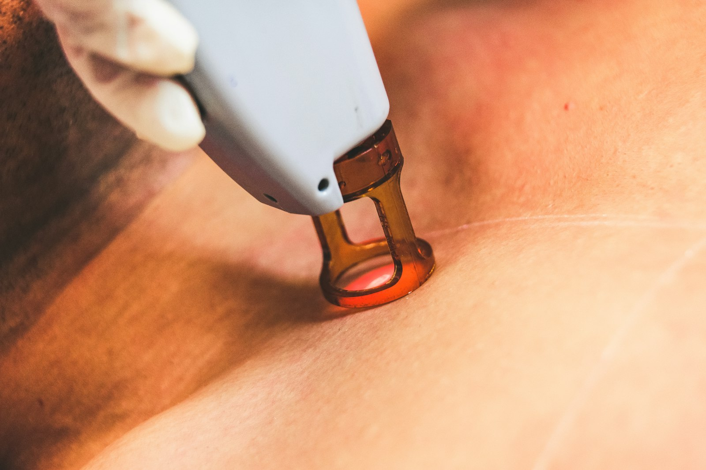
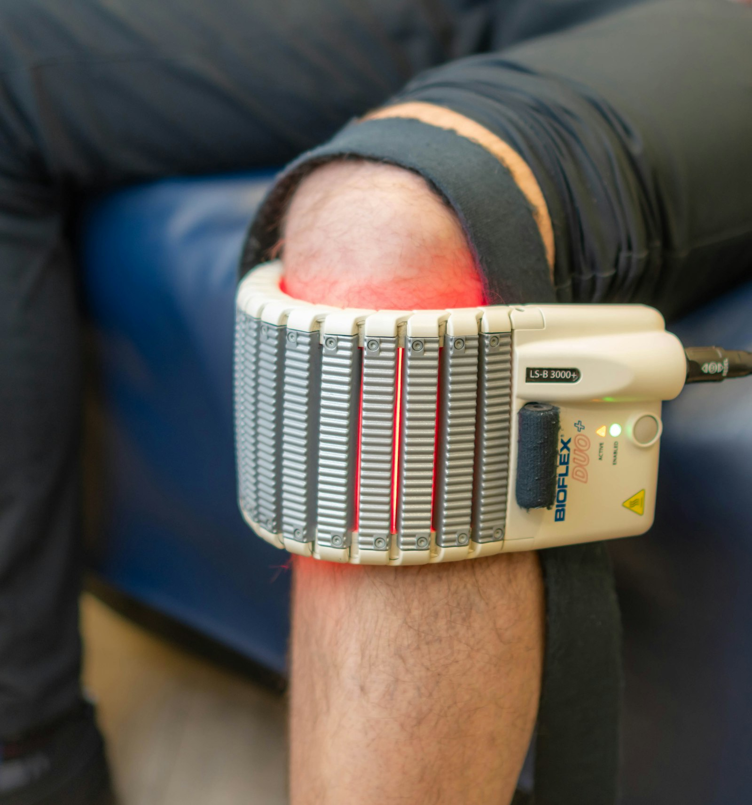
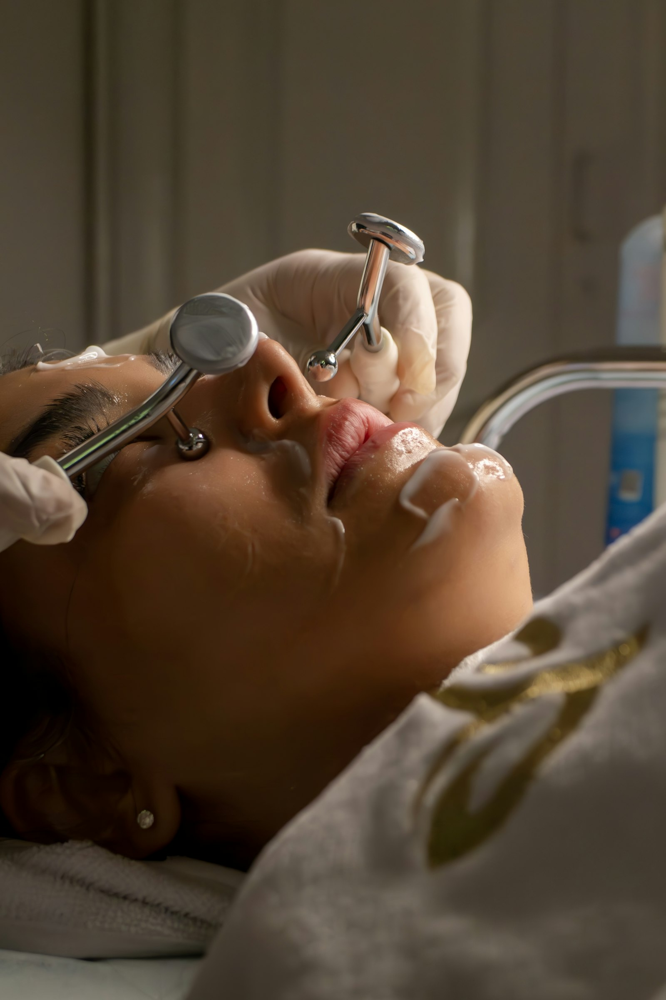
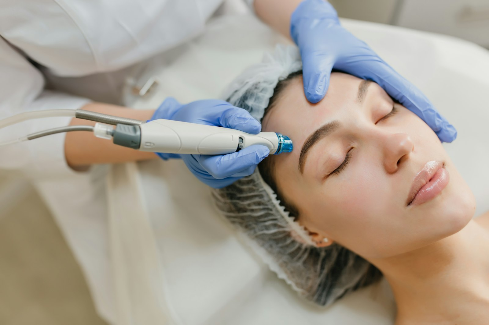

The Aesthetics Suite
Facial Aesthetics
Beyond the smile. Advanced skin analysis, medical-grade laser resurfacing, and fully customized facials — delivered with the same precision we bring to dentistry.

Laser Resurfacing
DEKA CO2 Facial Resurfacing Laser
Fractional CO2 laser technology from one of the most respected names in aesthetic medicine — engineered to resurface, tighten, and renew skin at the cellular level.
DEKA is an Italian manufacturer that has been building medical laser systems since 1981, and their CO2 platforms are used in dermatology and plastic surgery practices worldwide. Fractional CO2 laser resurfacing works by delivering precisely controlled columns of laser energy into the skin, creating microscopic treatment zones while leaving the surrounding tissue intact.
That controlled injury is the point: it triggers your body's natural wound-healing response, driving new collagen and elastin production over the weeks following treatment. The damaged surface layer sheds and is replaced by fresh, healthier tissue — which is why results continue improving for months after the session itself.
Because the depth and density of the energy can be dialed in, the same platform can deliver a light refresh with essentially no downtime, or a deeper resurfacing session for more significant correction. Dr. Patel and our aesthetics team determine the right intensity based on your skin type, your concerns, and how much recovery time fits your life.
What to Expect
We start with an Emage 3D skin analysis to establish an objective baseline and identify what's happening beneath the surface.
A topical numbing agent is applied beforehand. Most sessions run 30–45 minutes. Patients typically describe the sensation as warm and prickling.
Expect redness similar to a sunburn for several days depending on treatment depth. Light sessions allow return to normal activity almost immediately.
Initial brightening within one to two weeks; collagen remodeling continues for three to six months. A series of sessions produces the most dramatic correction.

Collagen Induction
Microneedling
A controlled, minimally invasive treatment that prompts your skin to rebuild itself — softening scars, refining texture, and firming from within, with far less downtime than laser resurfacing.
Microneedling — clinically known as collagen induction therapy — uses a precision device to create thousands of microscopic channels in the skin. Each one is small enough to close within hours, but together they trigger the body’s natural wound-healing cascade.
That response is the entire point. As the skin repairs those micro-channels, it produces fresh collagen and elastin — the structural proteins that thin with age and give skin its firmness. The result builds gradually rather than arriving overnight, and continues improving for months as cell turnover progresses.
Because it works without heat or ablation, microneedling is safe across all skin types, including deeper skin tones that carry higher pigmentation risk with aggressive laser treatments. It also pairs naturally with our other services: the micro-channels dramatically increase absorption of serums applied immediately afterward, and your Emage analysis determines which actives will do the most for your specific concerns.
Most patients see the strongest results from a series of three to six sessions spaced four to six weeks apart, followed by periodic maintenance.
What to Expect
We begin with an Emage 3D skin analysis to establish a measurable baseline and determine needle depth and serum selection for your skin.
Topical numbing is applied for 30–45 minutes beforehand. The session itself runs roughly 30–60 minutes and is comfortable for most patients.
Expect redness like a moderate sunburn for one to two days, with light flaking possible for up to a week. Most patients return to normal activity the next day.
Visible improvement within a week, deepening over the following months as collagen remodels. A series of three to six sessions produces the fullest correction.

Diagnostic Imaging
Emage 3D Skin Analysis
A complete three-dimensional map of your skin — revealing the damage, pigmentation, and texture changes developing beneath the surface, long before they're visible in a mirror.
The Emage system photographs your face under multiple controlled lighting conditions — including UV and cross-polarized light — then builds a detailed three-dimensional model from those captures. Different wavelengths penetrate to different depths, which means the scan reveals conditions at several layers of skin simultaneously.
What emerges is the picture your bathroom mirror can't show you: sun damage accumulated over decades sitting beneath the surface, vascular changes, pore congestion, and the earliest stages of pigmentation that hasn't yet surfaced. The system also compares your results against age and skin-type norms.
This is what separates a serious aesthetics practice from a spa. Rather than guessing at what your skin needs or selling you a package that sounds good, we build your treatment plan around measurable data — and then re-scan over time so you can see exactly what changed rather than relying on memory.
What to Expect
The scan itself takes only a few minutes and is completely non-invasive — no contact with the skin, no discomfort.
You'll review your results with our team on screen, with each concern scored and mapped so you can see precisely where it sits on your face.
Findings drive your treatment recommendations — whether that's laser resurfacing, a facial protocol, or a home-care regimen.
Repeat scans at intervals let you compare side by side and confirm objectively that your plan is working.

Signature Treatment
Custom HydroDerm Facials
A multi-step hydradermabrasion treatment that cleanses, exfoliates, extracts, and infuses in a single session — customized to your skin rather than pulled off a menu.
HydroDerm treatments use a vortex of water and serum delivered through a specialized handpiece. As the tip passes across the skin, it simultaneously loosens debris with a gentle exfoliating action, vacuums impurities out of the pores, and floods the freshly cleared skin with active ingredients — all in one pass.
That combination is what makes it different from a traditional facial. Manual extractions can be uncomfortable and inflammatory; chemical peels demand downtime. Hydradermabrasion achieves deep cleansing while the skin stays hydrated throughout, which is why patients walk out looking refreshed rather than red.
The word 'custom' matters here. The serums infused during the final step are selected based on your Emage analysis — a brightening protocol for pigmentation, a clarifying blend for congestion, a peptide-rich formula for aging concerns. The intensity of exfoliation is adjusted for sensitivity, so the treatment fits your skin instead of the other way around.
What to Expect
Most treatments run 30–50 minutes depending on the protocol and any add-on steps.
Entirely comfortable — most patients describe it as a cool, gentle massage. No numbing required.
None. Skin may look slightly flushed for under an hour, then simply looks brighter and smoother.
Excellent as a monthly maintenance treatment, and popular in the days before a wedding, shoot, or event.
Begin With a Skin Analysis
Every aesthetic plan starts with knowing exactly what your skin needs.